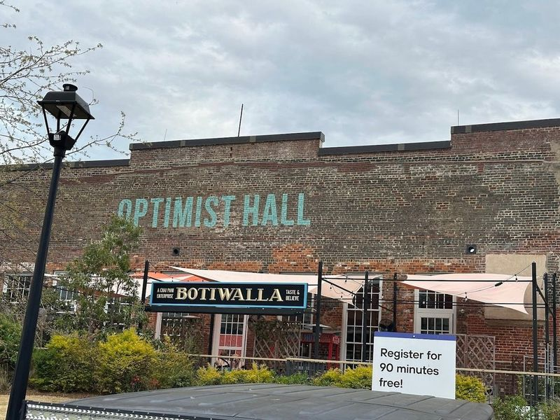
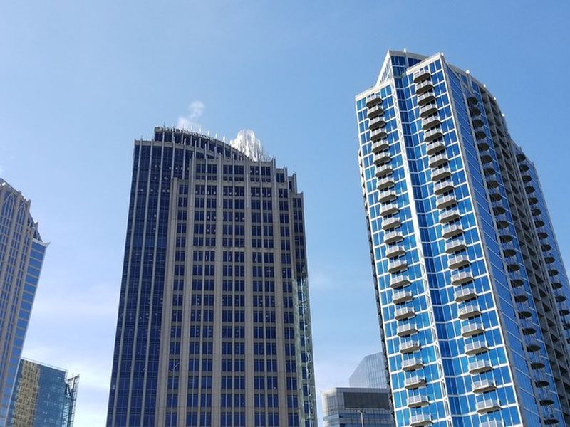
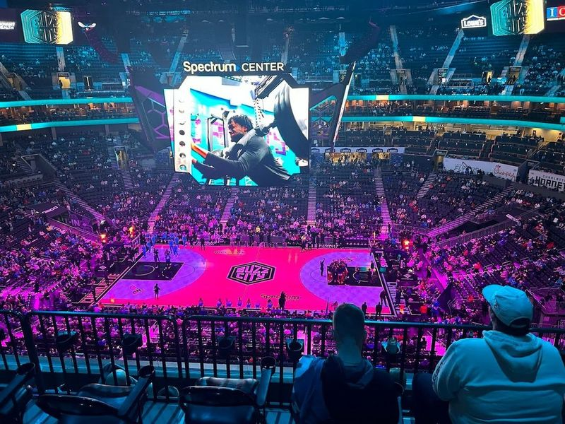
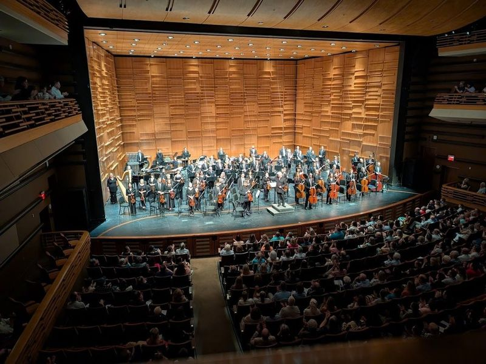
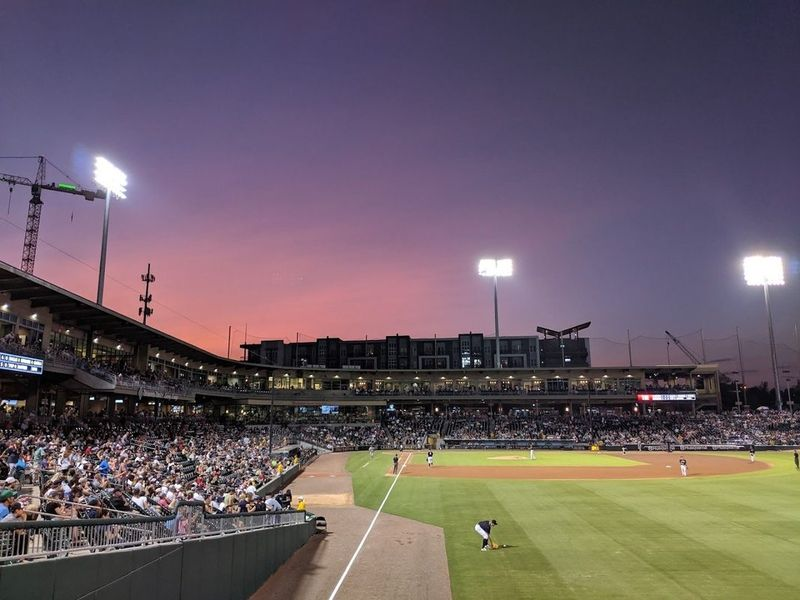
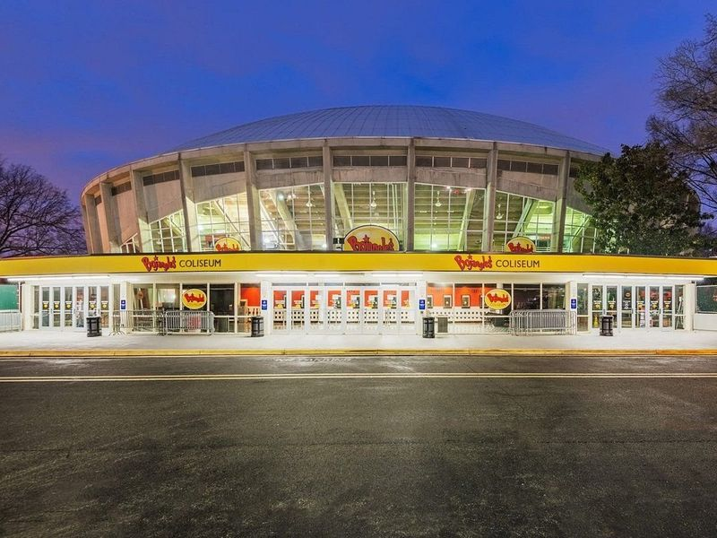
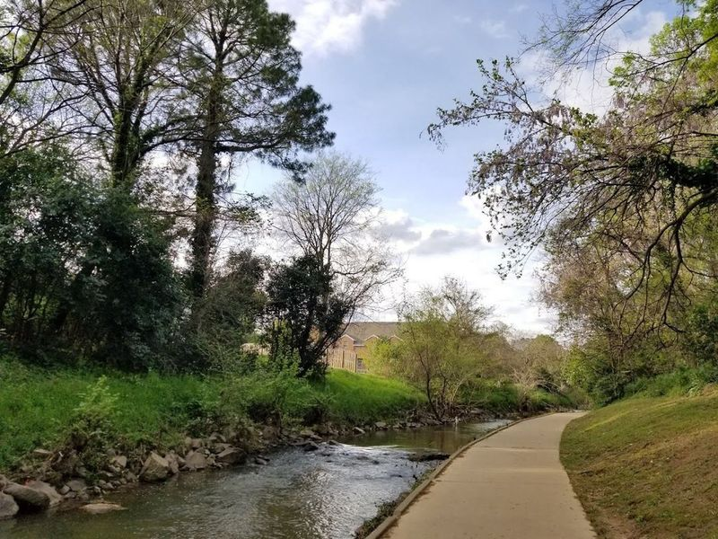
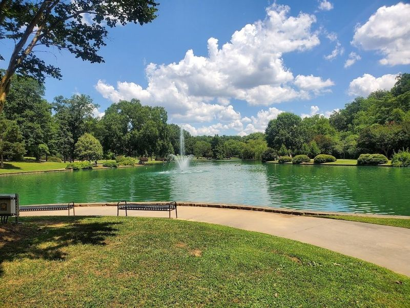
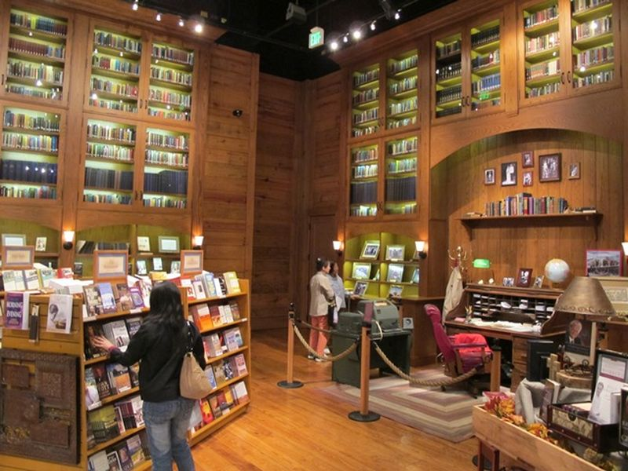

Explore Charlotte, NC
A Brief History
Charlotte was chartered at a Catawba Nation crossroads where gold-rush miners and plantation trade routes met before the Civil War. Uptown bank towers, NASCAR hall exhibits, and cotton-mill adaptive reuse record how Mecklenburg County finance, textile manufacturing, and post-1980 banking consolidation built North Carolina's largest metropolitan economy.
Attractions Map
Top Sights & Activities

Optimist Hall
Optimist Hall is a destination featuring a diverse array of food and bar stands, as well as art, events, and indoor-outdoor seating. The space offers communal tables and high top counters near the windows, creating an inviting atmosphere for dining and people-watching. With over 20 different vendors offering unique and flavorful cuisine such as empanadas, grilled cheese sandwiches, pizzas, tacos, dumplings, desserts, and more.

Discovery Place Science
Discovery Place Science anchors a familiar sightseeing stop in Charlotte, NC. Visitors encounter it along the city’s central routes through United States, often combining the visit with nearby parks, museums, and historic streets on the same itinerary. Street-level access and clear signage make it easy to reach on foot or by public transit from downtown districts.

Spectrum Center
Spectrum Center, located in Uptown Charlotte, is a versatile venue that serves as the home of the NBA's Charlotte Hornets and the AHL's Checkers. Since its opening in 2005 as the Charlotte Bobcats Arena, it has been a hub for basketball events, hosting not only NBA games but also college tournaments and football games. In addition to sports, it is a popular concert destination featuring performances by top artists. The arena also offers art exhibits and food galleries for visitors to enjoy.

Knight Theater
Tucked away in the cultural district of Charlotte, the Knight Theater stands as a premier performing arts venue that captivates audiences with its dynamic offerings. This architectural gem is not only home to the renowned Charlotte Symphony and North Carolina Dance Theatre but also serves as a hub for various artistic expressions. With its innovative design, the theater provides an intimate atmosphere where performers and spectators can connect during live shows.

Truist Field
Truist Field, also known as Charlotte Knights Stadium or BB&T Ballpark, is a 10,200-capacity bi-level baseball stadium in Charlotte, North Carolina. It is the home of the Triple-A Minor League team, the Charlotte Knights. Visitors can enjoy views of the city's skyscrapers and charming waterfalls at Romare Bearden Park. The Green, a one-acre pocket park with sculptures and fountains, offers another delightful option for exploration.

Bojangles Coliseum
Bojangles Coliseum is a historic venue in Charlotte, dating back to 1955. It has a cozy and humble atmosphere, offering a variety of entertainment options. The arena has a seating capacity of 8,600 and hosts live rock music, comedy acts, sporting events, and family-friendly shows like musicals. Home to the Charlotte Checkers hockey team since 1992, the coliseum also plays an active role in the community by contributing to various charitable causes.

Little Sugar Creek Greenway
The Little Sugar Creek Greenway offers 19 miles of paved paths for hiking and biking, following the charming creek through the heart of the city. With connections to parks and picturesque views, this popular greenway spans 30 kilometers when completed. The project, conceived in 1968, aims to restore natural areas while revitalizing urban spaces along the sparkling stream.

Freedom Park
Freedom Park in Charlotte, North Carolina is a sprawling 98-acre park offering a variety of activities for visitors. The park features sports fields, playgrounds, walking trails, and even a lakeside bandshell. It's an ideal spot for picnics and leisurely strolls around its quaint ponds and well-maintained gardens. Additionally, the park hosts events like the Festival In The Park with various food choices and art displays.

Billy Graham Library
Billy Graham Library anchors a familiar sightseeing stop in Charlotte, NC. Visitors encounter it along the city’s central routes through United States, often combining the visit with nearby parks, museums, and historic streets on the same itinerary. Street-level access and clear signage make it easy to reach on foot or by public transit from downtown districts.